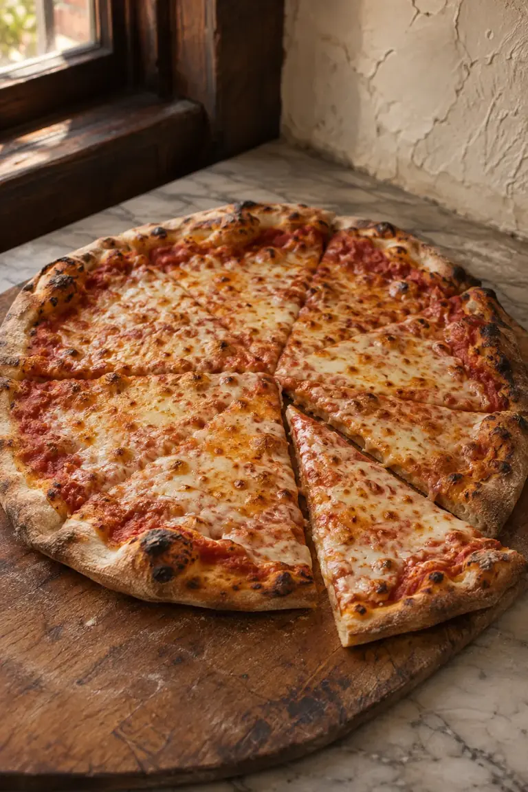
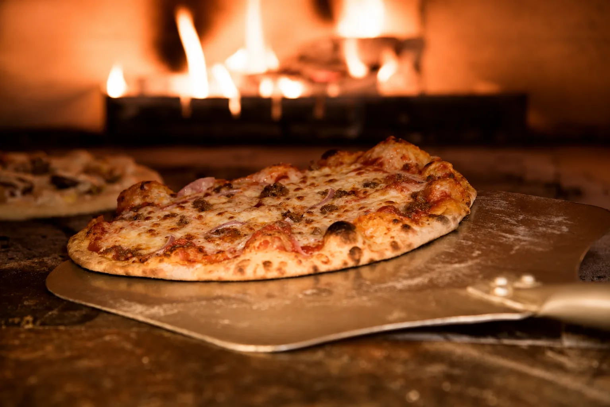

Pizza
Classic cheese, Grandma squares and specialty pies.
See pizzasWhitestone, Queens
Cheese pies, Grandma squares, and Italian favorites on 10th Avenue.
Dine in, takeout & delivery

On the menu
Catering
Pasta trays, salads, heroes and Italian entrées for family parties or office lunches. Call the shop to plan quantities and pickup.
Call about catering
Visit Cascarino’s
See Toast for current pickup and delivery hours. Call for dine-in and holiday hours.